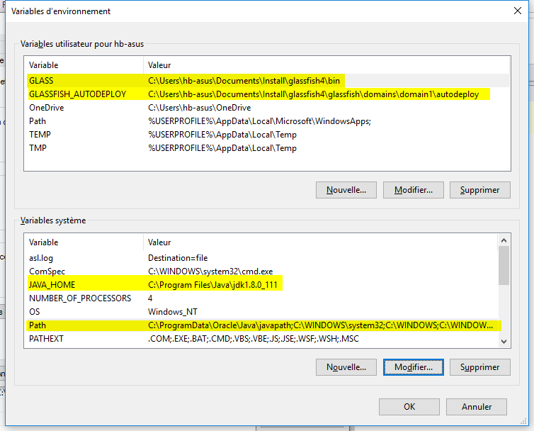
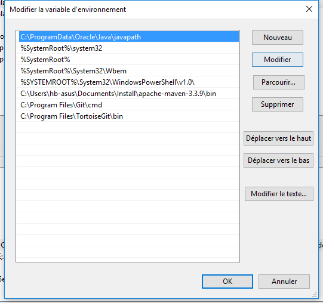

@echo off
Set GLASSFISH_PATH=C:\Users\hb-asus\Documents\Install\glassfish4
if "%1" == "start" (
echo [INFO] Starting Glassfish
call %GLASSFISH_PATH\bin\asadmin start-domain
goto end
)
if "%1" == "stop" (
echo [INFO] Stopping Glassfish
call %GLASSFISH_PATH\bin\asadmin stop-domain
goto end
)
if "%1" == "" (
echo [INFO] Il manque un argument
) else (
echo [INFO] Il manque un argument
)
:end
@echo on
Sous windows :
Win + Pause
Paramètres système avancés
Variables d'environnement

Détail supplémentaire pour la variable Path

Créé avec HelpNDoc Personal Edition: Créer des documents d'aide PDF facilement